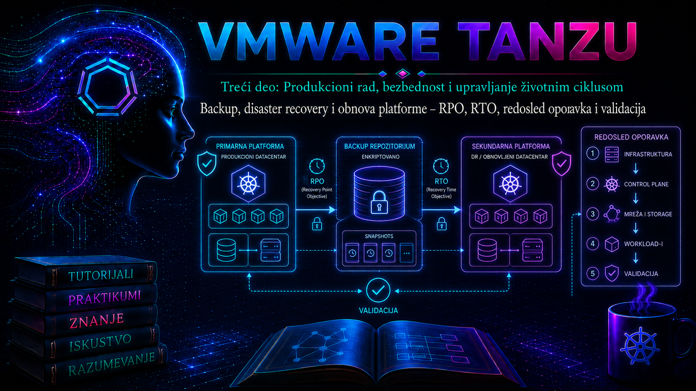

VMware & Tanzu

Backup Tanzu okruženja nije jedna kopija jednog sistema. Platforma je lanac zavisnosti koji obuhvata fizičku i virtuelnu infrastrukturu, vCenter Server, mrežni i storage sloj, Supervisor, VKS klastere, Kubernetes objekte, persistent podatke, registre image-a, identitet, sertifikate, DNS i spoljne servise. Ako administrator sačuva samo virtuelne mašine ili samo YAML manifeste, dobio je delimičnu zaštitu, ali ne i dokaz da može da obnovi uslugu. Disaster recovery (DR) zato počinje analizom poslovne usluge i zavisnosti, a završava se funkcionalnim testom aplikacije, integriteta podataka i bezbednosnih kontrola.
Ova lekcija nastavlja lifecycle i automatizacioni način rada iz prethodnih lekcija: politike, rasporedi, retention i testovi moraju biti deklarativni, ponovljivi i proverljivi. Cilj nije samo napraviti backup, već projektovati obnovu koja ima vlasnika, odobren redosled, merljiv RPO i RTO, izolovanu kopiju, dokumentovan runbook i dokaz da je poslednji test završen u dozvoljenom vremenu.
1. Ishodi učenja i granice odgovornosti
Po završetku lekcije administrator treba da ume da:
- prevede poslovne zahteve u RPO, RTO, retention i nivo konzistentnosti;
- napravi mapu zavisnosti i matricu zaštite po slojevima Tanzu platforme;
- razlikuje vCenter file-based backup, image-level backup, Kubernetes resource backup, CSI snapshot i aplikativno konzistentnu kopiju;
- odredi redosled obnove infrastrukture, platformskih servisa, VKS klastera i aplikacija;
- izvede kontrolisani backup i nedestruktivan restore test, prikupi logove i dokaže rezultat;
- prepozna delimično uspešan backup, neusklađene verzije, nedostupno objektno skladište, neobnovljene tajne i nekonzistentne baze;
- razdvoji tehnički oporavak resursa od potvrde da je poslovna usluga zaista obnovljena.
Granica ove lekcije je operativni dizajn i validacija oporavka. Izbor konkretnog enterprise backup proizvoda, ugovaranje sekundarne lokacije i detaljan poslovni continuity plan zavise od organizacije. Komercijalni proizvod nije automatski dokaz potpunog pokrića: mora biti izričito podržan za korišćenu kombinaciju vSphere/VCF, Supervisor, VKS, CSI drajvera i Kubernetes izdanja.
2. RPO, RTO, retention i prihvatljiv gubitak
Recovery Point Objective (RPO) je najveći prihvatljiv vremenski gubitak podataka. Ako je RPO 15 minuta, organizacija mora obezbediti da u prihvatljivom incidentu ne izgubi više od približno 15 minuta potvrđenih promena. Recovery Time Objective (RTO) je najveće prihvatljivo vreme od proglašenja incidenta do povratka usluge na dogovoreni nivo. RTO nije samo vreme kopiranja podataka: obuhvata detekciju, odluku, eskalaciju, obezbeđivanje infrastrukture, restore, ponovno povezivanje zavisnosti, validaciju i predaju vlasniku usluge.
RPO = vreme incidenta − vreme poslednje upotrebljive i konzistentne tačke oporavka
ostvareni RTO = vreme potvrđene funkcionalne obnove − vreme proglašenja incidentaRetention određuje koliko dugo se tačke oporavka čuvaju, ali ne dokazuje njihovu upotrebljivost. Backup star 30 dana može zadovoljiti retention, a da ne zadovoljava RPO. Slično tome, replika sa greškom ili kriptovanim podacima može brzo preneti isti kvar na DR lokaciju. Zbog toga su backup, replikacija, visoka dostupnost i disaster recovery povezane, ali različite discipline.
| Pojam | Pitanje koje rešava | Tipična greška | Dokaz |
|---|---|---|---|
| HA | Kako usluga preživljava lokalni kvar komponente? | HA se smatra zamenom za backup. | Kontrolisan failover i alarmi. |
| Backup | Iz koje istorijske tačke mogu vratiti stanje? | Proverava se samo status posla, ne restore. | Obnovljen uzorak i verifikovan sadržaj. |
| Replikacija | Kako kopiju brzo preneti na drugo mesto? | Logička korupcija se odmah replicira. | Lag, health i nezavisna tačka oporavka. |
| DR | Kako obnoviti kompletnu uslugu posle katastrofe? | Postoji alat, ali nema redosleda i vlasnika. | Izmeren end-to-end test prema runbook-u. |
| Retention | Koliko dugo čuvamo tačke oporavka? | TTL se meša sa RPO. | Politika, katalog kopija i test čitljivosti. |
3. Klasifikacija usluga i recovery tier-ovi
Jedinstven RPO i RTO za celu platformu obično je ili preskup ili beskoristan. Usluge treba klasifikovati prema posledici prekida, učestalosti promene i načinu rekonstrukcije. Git repozitorijum može biti autoritativan izvor za deklarativne objekte, ali nije backup runtime podataka. Baza podataka može zahtevati log shipping i point-in-time recovery, dok stateless frontend može biti ponovo raspoređen iz Git-a i registra.
| Primer tier-a | Primer RPO/RTO | Primer zaštite | Napomena |
|---|---|---|---|
| Tier 0 – identitet i upravljanje | RPO ≤ 1 h; RTO ≤ 4 h | Česte konfiguracione kopije, redundansa, izolovana dokumentacija i pristup | Vrednosti su primer; organizacija ih odobrava analizom uticaja. |
| Tier 1 – kritični stateful workload | RPO ≤ 15 min; RTO ≤ 2 h | Aplikativni backup/logovi, CSI ili storage kopija i Kubernetes metapodaci | Crash-consistent snapshot možda nije dovoljan. |
| Tier 2 – standardna poslovna usluga | RPO ≤ 4 h; RTO ≤ 8 h | Raspoređeni resource i volume backup | Test najmanje prema internom DR ciklusu. |
| Tier 3 – lako obnovljiv stateless servis | RPO 24 h; RTO 24 h | GitOps, image registry i minimalni backup tajni/podataka | Rebuild je često brži od restore-a. |
Brojevi u tabeli nisu preporuka proizvođača. Oni su obrazac za razgovor sa vlasnikom usluge. Svaki cilj mora imati mernu tačku: kada incident počinje, ko ga proglašava, koji nivo funkcionalnosti znači „oporavljeno” i da li se vreme čekanja na poslovnu potvrdu računa u RTO.
4. Mapa slojeva i šta se zaista štiti
| Sloj | Objekti i stanje | Primarna zaštita | Restore zavisnost |
|---|---|---|---|
| Fizička/virtuelna infrastruktura | ESXi, datastore, vDS, port grupe, routing, load balancer | Redundansa, konfiguraciona evidencija, vendor backup gde je podržan | Compute, mreža, storage, DNS i vreme moraju biti dostupni. |
| vCenter Server | Inventar, konfiguracija, događaji, uloge, vDS podaci i servisi | Native file-based backup prema dokumentaciji izdanja | Kompatibilan VCSA installer/ISO, backup lokacija i mrežni identitet. |
| NSX/VCF komponente | Manager konfiguracija, mrežne politike, edge i fabric stanje | Native backup svake komponente; orkestrirani VCF postupak gde se koristi | Tačan proizvod, izdanje i propisan redosled. |
| Supervisor control plane | Supervisor konfiguracija i workload-management stanje | vSphere/Supervisor podržani backup i restore tok | Obnovljen i zdrav vCenter plus zavisna infrastruktura. |
| VKS klaster | Cluster API objekti, Kubernetes resursi i konfiguracija | Deklarativni izvori, podržani Velero/enterprise backup; po potrebi rebuild | Supervisor, namespace, politike, sadržajna biblioteka/registry i mreža. |
| Persistent volume | Blokovi/fajlovi aplikativnih podataka | CSI snapshot, data mover/file-system backup ili aplikativni backup | Kompatibilan CSI/storage, VolumeSnapshotClass i dozvoljen kapacitet. |
| Aplikacija | Deployments, Services, CRD/CR, ConfigMaps, Secrets, baze i redovi | GitOps + backup runtime objekata + nativni mehanizam baze | CRD/operator pre CR objekata; tajne, sertifikati, registry i spoljne usluge. |
| Spoljni sistemi | DNS, IdP, PKI, KMS, registry, object store, Git, monitoring | Sopstvena politika zaštite svakog sistema | Pristupni nalozi i break-glass procedura moraju biti dostupni nezavisno. |
Najvažnije pravilo je da zaštita nižeg sloja ne podrazumeva automatsku aplikativnu konzistentnost višeg. Snapshot datastore-a može sačuvati blokove, ali ne mora isprazniti transakcioni log baze. Backup Kubernetes API objekata može obnoviti PVC deklaraciju, ali ne i sadržaj volumena. Git može ponovo kreirati Deployment, ali ne i Secret koji nikada nije bezbedno upisan u repozitorijum.
5. Konzistentnost podataka i izbor metode
Crash-consistent kopija predstavlja stanje kakvo bi sistem video posle iznenadnog nestanka napajanja. Može biti dovoljna za neke fajl-sisteme i aplikacije sa dobrim journal-om. File-system-consistent kopija koordinira upis na nivou fajl-sistema. Application-consistent kopija koristi aplikativne hook-ove, quiesce, dump, log backup ili nativni API da bi transakcije bile u poznatom stanju. Potreban nivo određuje vlasnik aplikacije zajedno sa storage i platform timom.
- Za bazu podataka koristite njen podržani backup/PITR mehanizam i testirajte restore kataloga, logova i ključeva.
- Za PVC snapshot proverite da CSI drajver i storage podržavaju snapshot, da postoji odgovarajuća
VolumeSnapshotClassi da kopija nije vezana samo za isti failure domain. - Za file-system backup proverite throughput, promenu podataka tokom posla, prava pristupa, symlink-ove i restore UID/GID vrednosti.
- Za Kubernetes resurse proverite CRD, admission webhook-ove, operatore, finalizer-e, cluster-scoped resurse i mapiranje storage klasa.
Kubernetes VolumeSnapshot je standardizovan zahtev za point-in-time kopiju volumena. On nije sam po sebi off-site, immutable ili dugoročni backup. Ako se snapshot i izvorni volume nalaze na istom storage sistemu i u istom failure domain-u, kvar tog sistema može ukloniti oba. Produkciona strategija zahteva nezavisnu kopiju ili data mover kada analiza rizika to nalaže.
6. Pravilo 3-2-1-1-0 i bezbednost kopija
Koristan cilj je 3-2-1-1-0: najmanje tri kopije podataka, na najmanje dva tipa medija ili nezavisna storage domena, jedna van primarne lokacije, jedna offline ili immutable, i nula neotkrivenih grešaka posle automatizovane verifikacije. Ovo nije zamena za procenu rizika, ali sprečava da produkcija i sve kopije dele isti administratorski nalog, KMS, mrežni segment ili failure domain.
- Backup service account dobija najmanje potrebne privilegije; interaktivni administratorski nalog se ne koristi za raspoređene poslove.
- Objektno skladište koristi enkripciju u prenosu i mirovanju, versioning/object lock kada je podržan i odvojenu politiku brisanja.
- Ključevi, lozinke i recovery kodovi čuvaju se odvojeno od šifrovanih kopija, uz kontrolisan break-glass pristup.
- Backup mreža, repozitorijum i konzola ne treba da dele istu kompromitovanu ravan upravljanja sa produkcijom.
- Restore se prvo izvodi u izolovanoj mreži; pre povezivanja se proveravaju malware, identiteti, certifikati i izlazne integracije.
7. vCenter, Supervisor i verzijski uslovljeni tokovi
vCenter Server Appliance ima podržani native file-based backup. Konfiguriše se kroz VAMI interfejs, tipično na https://<vcsa-fqdn>:5480, ili odgovarajući API, prema vodiču tačnog izdanja. Backup se šalje na podržani udaljeni protokol i može uključiti opcionu enkripciju. Restore se ne radi prostim kopiranjem fajlova u postojeću appliance: pokreće se iz kompatibilnog VCSA installera/ISO-a, postavlja nova appliance i zatim uvozi sačuvano stanje prema zvaničnom workflow-u.
Pre oslanjanja na vCenter backup proveravaju se status poslednjeg posla, dostupnost repozitorijuma, lozinka za enkripciju, DNS/NTP, installer iste podržane verzije/build-a i dokumentovana mrežna konfiguracija. Virtual-machine snapshot VCSA nije trajna zamena za file-based backup i ne treba ga zadržavati kao dugoročnu kopiju.
Za Supervisor control plane koristi se isključivo podržani postupak konkretnog vSphere/VCF izdanja. Zvanični vSphere 8 vodiči dokumentuju backup i restore Supervisor control plane-a i TKG workload-a; VCF/vSphere 9 vodiči koriste termin VKS i novije Velero tokove. Nazivi paketa, verzije plug-in-a, podržani object store i komande instalacije razlikuju se. Pre implementacije proveravaju se product interoperability i Velero/vSphere plugin matrice; primeri iz starije 7.x/8.x dokumentacije ne prenose se slepo na 9.x.
etcdctl snapshot Supervisor ili upravljanog VKS control plane-a kao generičan recovery postupak, osim ako tačan Broadcom runbook i podrška to izričito zahtevaju. Upravljani control plane ima vlasništvo i lifecycle koje platforma kontroliše; neautorizovana intervencija može napraviti nepodržano ili nekonzistentno stanje.
8. Velero i backup workload-a
Velero čuva Kubernetes API objekte u object store-u, a podatke volumena obrađuje preko podržanog snapshot plug-in-a ili file-system/data-mover mehanizma. Status Completed znači da je Velero posao završen bez prijavljenih grešaka, ali nije dokaz aplikativne konzistentnosti. Status PartiallyFailed zahteva pregled grešaka i upozorenja; takva kopija ne sme automatski dobiti status „uspešna” u operativnom izveštaju.
Sledeće komande su read-only i izvršavaju se sa administratorske stanice na kojoj su podešeni tačan VKS kubeconfig i kompatibilan Velero CLI. Nazivi resursa i izlaz zavise od instalirane verzije.
kubectl config current-context
kubectl cluster-info
kubectl get ns
kubectl -n velero get pods,deploy,daemonset
velero version
velero backup-location get
velero schedule get
velero backup getPre state-changing backup komande administrator potvrđuje kontekst, namespace obuhvat i zahtev za volumenima. Primer pravi ručni backup samo laboratorijskog namespace-a, uključuje cluster-scoped resurse koje Velero veže za izbor i zahteva snapshot volumena. Konkretna semantika plug-in-a i snapshot opcija mora biti potvrđena za instaliranu verziju.
BACKUP_NAME="payments-dr-$(date -u +%Y%m%dT%H%M%SZ)"
velero backup create "$BACKUP_NAME" \
--include-namespaces payments-lab \
--include-cluster-resources=true \
--snapshot-volumes \
--ttl 168h \
--wait
velero backup describe "$BACKUP_NAME" --details
velero backup logs "$BACKUP_NAME"
Komanda menja stanje tako što kreira Backup objekat i može pokrenuti storage snapshot ili prenos podataka. Bezbedna je samo kada je naziv jedinstven, object store dostupan, kvota dovoljna i aplikacija pripremljena za izabrani nivo konzistentnosti. Uspeh se potvrđuje fazom, brojem obrađenih resursa, odsustvom neočekivanih upozorenja, prisustvom kopije u backup lokaciji i kasnijim restore testom.
Za pregled događaja i kontrolera koriste se sledeće read-only provere:
kubectl -n velero get events --sort-by=.metadata.creationTimestamp
kubectl -n velero logs deploy/velero --since=2h
kubectl get volumesnapshot,volumesnapshotcontent -A
kubectl get pvc,pv -A
kubectl api-resources | grep -Ei 'backup|restore|snapshot'
Kod node-agent/file-system backup-a proveravaju se i odgovarajući DaemonSet podovi i PodVolumeBackup/PodVolumeRestore resursi ako ih instalirana verzija koristi. Logove treba korelisati po UTC vremenu, nazivu backup-a, namespace-u, PVC-u i snapshot handle-u, zajedno sa vCenter događajima i storage alarmima.
9. Šta manifesti i backup često ne obuhvate
- Image-e koji više ne postoje u registru ili su tag-ovani promenljivim tagom umesto digestom.
- Spoljne DNS zapise, IdP grupe, PKI private key materijal, KMS ključeve i firewall pravila.
- Dinamički generisane Secrets vrednosti koje GitOps namerno ne čuva.
- Licencne fajlove i hardverski vezane aktivacije.
- CRD ili operatore potrebne pre obnove njihovih custom resource objekata.
- Podatke u
emptyDir, lokalnom ephemeral storage-u i procesnoj memoriji. - Podržanu redoslednu konzistentnost između više baza, redova poruka i spoljnih API-ja.
- Audit i monitoring istoriju ako su backend sistemi u istom failure domain-u.
Recovery inventar zato mora sadržati najmanje: vlasnika, tier, namespace, VKS klaster, storage class, PVC/kapacitet, metod zaštite, lokaciju kopije, enkripcioni ključ, raspored, retention, poslednji uspešan backup, poslednji uspešan restore test, zavisnosti, runbook i odobreni cilj.
10. Redosled oporavka platforme
- Proglasiti incident i sačuvati dokaze. Zaustaviti automatizacije koje mogu prepisati stanje, zabeležiti vreme, obim, poslednje promene, alarme i audit trag.
- Obezbediti recovery ravan. Potvrditi osoblje, break-glass pristup, čiste administratorske stanice, dokumentaciju, kopije i ključeve.
- Obnoviti osnovne zavisnosti. Compute, storage, mrežu, routing, DNS, NTP, PKI/KMS i identitet u meri potrebnoj za upravljački sloj.
- Obnoviti management komponente. U VCF okruženju slediti tačno propisani SDDC Manager/vCenter/NSX redosled za izdanje; u vSphere okruženju obnoviti vCenter podržanim file-based tokom.
- Validirati vSphere stanje. Inventory, host connection, datastore, vDS/port grupe, certifikate, vreme, alarme i servise.
- Obnoviti Supervisor. Koristiti verzijski odgovarajući workflow; potvrditi control plane health, namespace-e, storage i mrežne servise.
- Obnoviti ili ponovo kreirati VKS klastere. Prvo platformsku konfiguraciju, Cluster API/VKS objekte i obavezne pakete; tek zatim workload-e.
- Obnoviti platformsku osnovu u klasteru. CRD, operatore, storage/network kontrolere, policy engine, ingress, cert-manager, external-dns i observability agente u zavisnom redosledu.
- Obnoviti podatke i workload-e. Secrets i konfiguracije, stateful komponente, baze i redove, pa stateless servise i ulazni saobraćaj.
- Validirati i kontrolisano vratiti saobraćaj. Tehničke provere, integritet podataka, poslovni test, bezbednosna potvrda, DNS/LB prebacivanje i pojačan monitoring.
Redosled nije univerzalna skripta. Ako je DNS spoljan i zdrav, ne obnavlja se. Ako je management domen VCF-a pogođen, koristi se VCF runbook, ne izolovani vCenter recept. Ako je oštećen samo jedan namespace, puni DR platforme je nepotrebno rizičan; bira se najmanji opseg koji pouzdano vraća uslugu.
11. Validacija: od infrastrukture do poslovne transakcije
| Nivo | Provera | Dokaz uspeha |
|---|---|---|
| Backup artefakt | Status, checksum gde postoji, enkripcija, retention i čitljivost | Katalog i uspešno učitan uzorak. |
| vSphere | vCenter servisi, hostovi, datastore-i, mreža, alarmi i vreme | Nema neočekivanih disconnected/degraded stanja. |
| Supervisor/VKS | API, čvorovi, conditions, sistemski podovi i paketi | Control plane dostupan; očekivani čvorovi Ready. |
| Storage | PVC Bound, mount, read/write, kapacitet i snapshot objekti | Kontrolni podatak čitljiv i potvrđen. |
| Aplikacija | Readiness, servis, ingress, zavisnosti i queue lag | Sintetička transakcija prolazi. |
| Podaci | DB recovery status, schema, redovi, checksum ili poslovni zbir | Vlasnik podataka potpisuje validaciju. |
| Bezbednost | RBAC, tajne, sertifikati, audit, skeniranje i egress | Nema prekomernih prava ili kompromitovanih kredencijala. |
| Cilj | Izmereni gubitak i ukupno vreme | Ostvareni RPO/RTO u okviru odobrenog cilja. |
Sledeće komande su read-only post-restore provere na obnovljenom VKS klasteru:
kubectl config current-context
kubectl get nodes -o wide
kubectl get pods -A
kubectl get pvc,pv -A
kubectl get events -A --sort-by=.metadata.creationTimestamp
kubectl -n payments-lab rollout status deployment/api --timeout=5m
kubectl -n payments-lab get ingress,service,endpointslice
Running pod nije dovoljan dokaz. Readiness može proći dok baza sadrži zastarele ili nekonzistentne podatke. Završna provera treba da izvrši poznatu read/write poslovnu transakciju sa kontrolnim identifikatorom, potvrdi rezultat u bazi ili redu i zatim bezbedno ukloni testni zapis. Test se dogovara sa vlasnikom aplikacije da ne pokrene stvarnu naplatu, slanje poruke ili drugi neželjeni spoljni efekat.
12. Praktikum – projektovanje i dokaz kontrolisanog oporavka
12.1. Cilj, topologija i preduslovi
Cilj je napraviti i validirati backup laboratorijskog namespace-a payments-lab, uključujući testni PVC, a zatim ga obnoviti u izolovani namespace bez brisanja izvora. Vežba dokazuje operativni tok, ne pun DR vCenter/Supervisor platforme. Produkcioni restore se ne izvodi bez change/incident odobrenja i verzijski odgovarajućeg vendor runbook-a.
- jedan zdrav Supervisor i jedan laboratorijski VKS klaster;
- kompatibilna, podržana Velero instalacija sa zdravim
BackupStorageLocationi odgovarajućim volume mehanizmom; - administratorska stanica sa
kubectl, Velero CLI i kubeconfig kontekstom za laboratorijski klaster; - namespace
payments-labsa aplikacijom i nekritičnim kontrolnim podacima; - izolovani DNS/ingress ili onemogućen spoljni saobraćaj za restore namespace;
- odobrena kvota i dovoljno prostora u object store-u i storage-u.
Potrebne su Kubernetes privilegije za čitanje obuhvaćenih resursa i kreiranje Velero backup/restore objekata. Ne koristiti trajni cluster-admin token u skriptama. Rizik je srednji: restore može kreirati resurse i PVC-ove; pogrešan namespace mapping može prepisati ili sukobiti se sa produkcionim imenima.
12.2. Pre-check i prikupljanje početnog stanja
kubectl config current-context
kubectl auth can-i get pods -n payments-lab
kubectl auth can-i create backups.velero.io -n velero
kubectl -n payments-lab get all,pvc,configmap,secret
kubectl -n velero get pods
velero backup-location get
velero backup get
Očekivano je da je izabran laboratorijski kontekst, Velero podovi su spremni, backup lokacija je Available, a PVC je Bound. Sačuvajte početni inventar i SHA-256 kontrolnog, nepoverljivog fajla iz volumena. Ne iznosite sadržaj Secret objekata u tiket ili terminalski transcript.
kubectl -n payments-lab exec deploy/data-check -- \
sha256sum /data/recovery-marker.txt12.3. Kreiranje i validacija backup-a
Pre backup-a vlasnik aplikacije obezbeđuje odgovarajući quiesce ili aplikativni backup baze. Sledeći Velero primer menja stanje i koristi se tek posle te potvrde.
BACKUP_NAME="payments-lab-$(date -u +%Y%m%dT%H%M%SZ)"
velero backup create "$BACKUP_NAME" \
--include-namespaces payments-lab \
--include-cluster-resources=true \
--snapshot-volumes \
--ttl 168h \
--wait
velero backup describe "$BACKUP_NAME" --details
velero backup logs "$BACKUP_NAME"
Kriterijum ove faze je Completed, bez neočekivanih warnings/errors, uz potvrđene volume operacije. Ako je faza PartiallyFailed, posao se ne proglašava uspešnim: evidentira se svaki izostavljeni resurs, utvrđuje uticaj i ponavlja backup tek posle korekcije. Sačuvajte naziv backup-a i UTC vreme jer su potrebni za korelaciju.
12.4. Nedestruktivni restore u izolovani namespace
Najbezbedniji redovan test je restore u novo ime namespace-a. Pre njega proverite da aplikacija neće kontaktirati produkcione spoljne sisteme. Mapping može promeniti namespace, ali ne garantuje da će svi hardkodirani hostovi, RBAC reference ili cluster-scoped objekti biti automatski bezbedno prilagođeni.
RESTORE_NAME="payments-test-$(date -u +%Y%m%dT%H%M%SZ)"
velero restore create "$RESTORE_NAME" \
--from-backup "$BACKUP_NAME" \
--namespace-mappings payments-lab:payments-restore \
--wait
velero restore describe "$RESTORE_NAME" --details
velero restore logs "$RESTORE_NAME"
Ovo je state-changing postupak. Očekivano je da restore završi bez grešaka i da se namespaced objekti pojave u payments-restore. Cluster-scoped objekti i resursi koji već postoje mogu biti preskočeni ili obrađeni prema pravilima instalirane Velero verzije; zato se opis i log čitaju, ne samo završna faza.
12.5. Tehnička i aplikativna validacija
kubectl -n payments-restore get all,pvc
kubectl -n payments-restore get events --sort-by=.metadata.creationTimestamp
kubectl -n payments-restore wait --for=condition=Ready pod \
--all --timeout=5m
kubectl -n payments-restore exec deploy/data-check -- \
sha256sum /data/recovery-marker.txtDobijeni hash mora biti jednak početnom. Zatim se izvodi bezopasna sintetička transakcija, proverava health endpoint, logovi aplikacije, stanje baze i dozvoljeni izlazni tok. Evidentiraju se početak restore-a, tehnička spremnost i vreme poslovne potvrde. Iz njih se računa ostvareni RTO; vreme poslednje potvrđene kopije koristi se za procenu ostvarenog RPO-a.
12.6. Troubleshooting grane
| Simptom | Dokazi i neposredni uzrok | Bezbedna korekcija | Trajna mera |
|---|---|---|---|
| Backup lokacija nije Available | Velero log, DNS/TLS, credentials, object-store audit; mreža ili autentikacija | Ne pokretati restore; obnoviti pristup bez menjanja kopija. | Monitoring lokacije, rotacija tajni i nezavisna mrežna provera. |
| Backup je PartiallyFailed | describe --details i backup log; nedozvoljeni/restricted resurs ili plug-in greška | Procena uticaja, podržano isključenje samo nebitnog resursa ili korekcija RBAC/plug-in-a. | Kompatibilna verzija i preflight test API resursa. |
| PVC ostaje Pending | Events, StorageClass, quota, CSI controller i vCenter događaji | Mapirati na podržanu storage klasu ili obezbediti kapacitet. | Dokumentovano cross-site mapiranje klasa i test kapaciteta. |
| Snapshot brisanje zaglavljeno | VolumeSnapshotContent handle, Supervisor događaji i privremeni PVC | Ne uklanjati finalizer naslepo; pratiti aktuelni Broadcom KB i potvrditi stale zavisnost. | Ispravna plug-in verzija, timeout nadzor i kontrolisano čišćenje. |
| Velero pod restartuje/OOM | kubectl describe pod, restart count i memory metrics | Smanjiti paralelizam/opseg ili povećati resurse prema podržanoj preporuci. | Capacity baseline i test sa realnim brojem fajlova/volumena. |
| Pod radi, aplikacija ne radi | Readiness, Secret/ConfigMap, DNS, certifikat, DB i eksterni endpoint | Vratiti nedostajuću zavisnost; zadržati ingress izolovan. | Dependency manifest i automatizovan sintetički test. |
Sistematični tok je: potvrditi simptom, odrediti obim i posledicu, sačuvati poslednje promene i vremensku liniju, prikupiti događaje/logove/metrike, postaviti hipotezu, dokazati neposredni i osnovni uzrok, primeniti najmanje invazivnu korekciju, ponoviti validaciju i dokumentovati nalaz. Privremeno ručno uklanjanje problematičnog objekta nije trajna mera ako verzijska nekompatibilnost ostaje.
12.7. Rollback i vraćanje laboratorije
Pošto izvorni namespace nije brisan, rollback znači uklanjanje samo testnog restore-a. Pre brisanja arhivirajte rezultate i potvrdite da nijedan obnovljeni servis nije povezan sa produkcijom. Sledeće komande su destruktivne i dozvoljene su samo za tačno provereni laboratorijski namespace i restore objekat.
kubectl config current-context
kubectl get namespace payments-restore
velero restore describe "$RESTORE_NAME" --details
kubectl delete namespace payments-restore
velero restore delete "$RESTORE_NAME" --confirmBrisanje restore objekta ne mora automatski obrisati sve resurse koje je restore kreirao, a ponašanje zavisi od verzije. Nakon brisanja proverite namespace, PV/PVC, VolumeSnapshot objekte i object-store politiku. Backup zadržite do isteka odobrenog TTL-a ili ga brišite samo kroz kontrolisan retention postupak. Kriterijum završetka vežbe je: izvorna aplikacija netaknuta, testni resursi uklonjeni, kopija katalogizovana, RPO/RTO izmereni i nalaz potpisan.
13. Incident response i odluka restore ili rebuild
Restore nije uvek najbrži ni najsigurniji put. Ako je VKS klaster deklarativno definisan, Supervisor zdrav, a podaci imaju nezavisnu kopiju, često je čist rebuild klastera i restore workload-a pouzdaniji od pokušaja popravke kompromitovanog control plane-a. Kod ransomware incidenta obnova „na mestu” može sačuvati napadačev pristup; prednost ima čista zona, rotacija kredencijala i forenzičko očuvanje originala.
| Uslov | Prednost restore-a | Prednost rebuild-a |
|---|---|---|
| Poznata dobra tačka, veliki state | Brže vraćanje podataka i kompleksnog runtime stanja | Može biti presporo zbog prenosa. |
| Deklarativan klaster, mali state | Čuva runtime detalje | Čistije, ponovljivo i lakše za dokazivanje. |
| Kompromitovan identitet/control plane | Rizik vraćanja kompromitacije | Nova trust osnova i rotirani identiteti. |
| Nekompatibilna ciljna verzija | Može biti nepodržano | Nova podržana platforma uz migraciju podataka. |
14. Administratorske prakse
- Backup politika i restore runbook verzionišu se, pregledaju posle svake arhitektonske promene i čuvaju van primarne platforme.
- Svaki kritični workload ima vlasnika, recovery tier, mapu zavisnosti i definisan funkcionalni test.
- Alarm se podiže za propušten raspored,
Failed/PartiallyFailed, nedostupnu lokaciju, rast trajanja, OOM i prekoračenje retention-a. - Restore testovi se izvode periodično i posle većih upgrade-a, promene CSI-ja, Velero plug-in-a, storage-a, KMS-a ili mrežne topologije.
- Kopije i ključevi imaju odvojene administrativne domene; brisanje i smanjenje retention-a zahtevaju pojačanu kontrolu.
- Ne zaključuje se uspeh iz zelene kontrolne table. Dokaz uključuje restore, podatke, aplikaciju, bezbednost i izmereno vreme.
- Za svaku verziju čuva se kompatibilan installer, matrica interoperabilnosti i tačan vendor runbook.
- DR vežba ima posmatrača i zapis odluka; otkriveni jaz dobija vlasnika, rok i retest.
15. Završna kontrolna tačka
Administrator je savladao lekciju kada može dokazivo da:
- izračuna i objasni RPO/RTO bez mešanja sa rasporedom i retention-om;
- mapira svaku Tanzu komponentu na metod zaštite, lokaciju kopije i restore zavisnost;
- objasni zašto snapshot, GitOps ili vCenter backup pojedinačno nisu potpuna zaštita;
- proveri zdravlje Velero servisa, backup lokacije, backup-a, snapshot-a i PVC-a bez promene stanja;
- izvede odobren backup i izolovan restore test sa ispravnim namespace mapping-om;
- prepozna
PartiallyFailedkao neusaglašen rezultat i pronađe konkretan izostavljeni resurs; - odredi redosled od infrastrukture i trust servisa do stateful i stateless workload-a;
- validira hash/kontrolni podatak, storage, aplikativnu transakciju, RBAC i sertifikate;
- izmeri ostvareni RPO/RTO i dokumentuje odstupanje, uzrok, korektivnu meru i retest;
- bezbedno očisti laboratorijski restore bez uticaja na izvornu aplikaciju i retained backup.
Zaključak
Pouzdan oporavak Tanzu platforme nastaje tek kada se više različitih kopija i procedura spoje u jedan testiran lanac. vCenter file-based backup štiti upravljačko stanje vCenter-a; podržani Supervisor workflow štiti platformsku kontrolnu ravan; Velero ili kompatibilan enterprise alat štiti Kubernetes objekte i, uz odgovarajući volume mehanizam, podatke; aplikativni backup obezbeđuje transakcionu konzistentnost. Nijedan od ovih slojeva sam ne dokazuje obnovu poslovne usluge.
Odgovoran administrator zato projektuje od kraja: definiše prihvatljivi gubitak i vreme, mapira zavisnosti, bira tačke oporavka, izoluje i štiti kopije, dokumentuje verzijski tačan redosled, testira restore i meri stvarni rezultat. U incidentu se prvo čuvaju dokazi i zaustavlja širenje greške, zatim se obnavlja najniži potreban zdravi sloj, a saobraćaj se vraća tek kada su infrastruktura, podaci, aplikacija i bezbednost zajednički validirani.